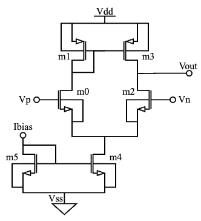
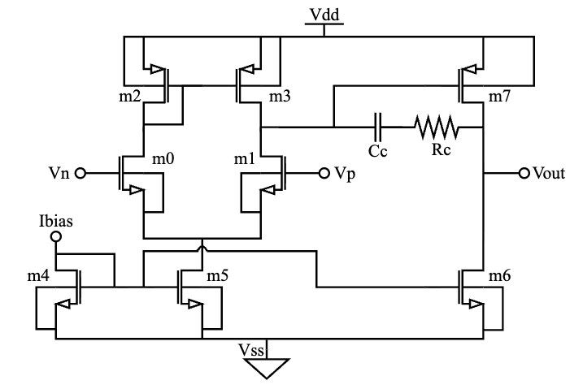
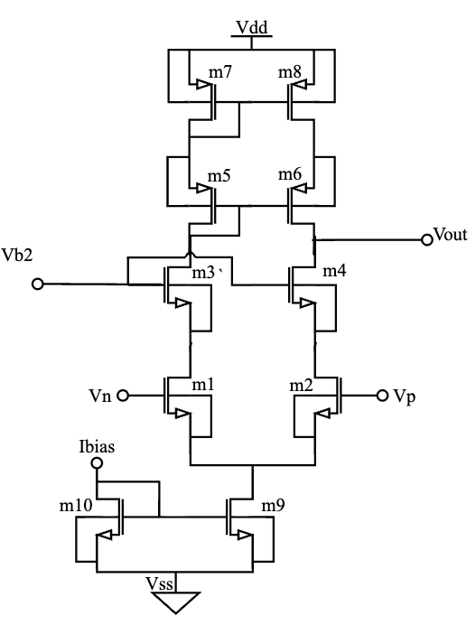
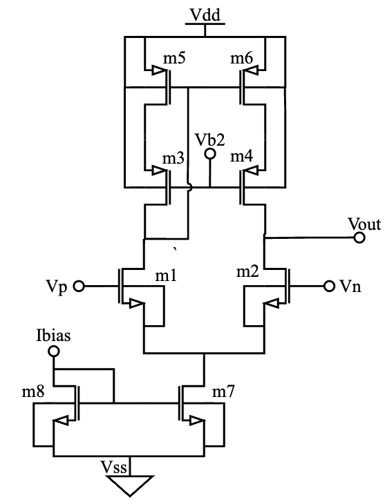
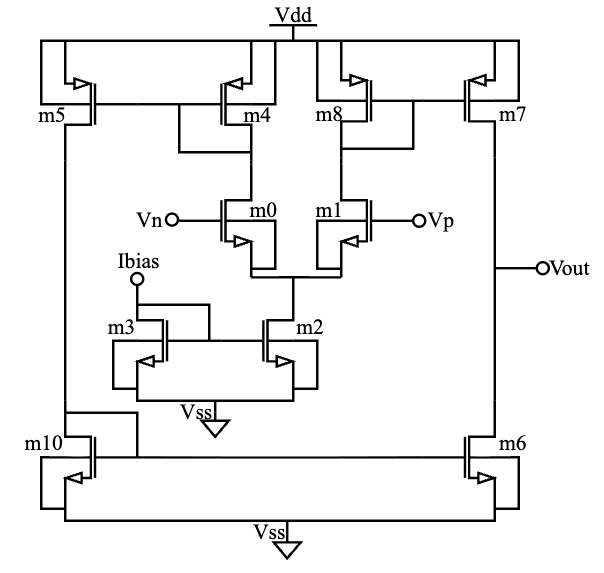

Input
A SPICE OTA netlist, a topology image, universal HSPICE testbenches, and design targets such as supply voltage, bias current, load capacitance, and design intent.
LLM-aided analog performance modeling
A framework for generating compact OTA performance models with large-language-model reasoning, gm/Id lookup-table sizing, and closed-loop HSPICE verification.
What the framework does
A SPICE OTA netlist, a topology image, universal HSPICE testbenches, and design targets such as supply voltage, bias current, load capacitance, and design intent.
NEMESIS prompts an LLM to propose symbolic performance equations, compiles them into executable Python, sizes devices through gm/Id data, and validates performance using HSPICE.
A converged scalar OTA model, a vectorized evaluator, sized device parameters, equation history, LLM outputs, and SPICE/model performance reports.
High-level flow
The base driver is llm_aided_modelling.sh. Each block below links to the
detailed script operation that implements it.
Repository map
llm_aided_modelling.shUniversal/dut/5t_ota.sp.Universal/otas/Universal/testbenches/<WORK_DIR>/Specs/docs/Detailed workflow
llm_aided_modelling.sh
The script sets WORK_DIR, derives paths for the DUT, netlist, specs,
prompts, models, and reports, then removes any existing work directory with the same
name. It recreates subdirectories for testbenches, netlist,
prompts, llm_outputs, ota_models,
ota_model_performance, spice_performance, and
specs.
It copies the universal testbenches from Universal/testbenches/ and the
selected DUT netlist from Universal/dut/<WORK_DIR>.sp.
generate_netlist_for_llm.py extracts the DUT subcircuit and
compacts transistor lines into a cleaner representation. This reduces prompt noise
while preserving topology, device names, terminals, model types, and sizing
parameters.
design_params.sp
generate_design_params.py scans the DUT devices and creates a SPICE
parameter template containing width and length variables. The default script call sets
device length to 180, and later sizing stages update the width values.
generate_op_hspice.py combines the selected DUT and
tb_op.sp template into tb_op_temp.sp. The temporary deck is
formatted for reliable operating-point table extraction by Python.
generate_gmid_estimator_agent_prompt.py prepares an LLM prompt using the
simplified netlist plus design context: Vdd, Vss,
ibias, channel length, application class, and design intent.
call_codex.py sends the gm/Id prompt and topology figure to the selected
model. The output is written to <WORK_DIR>/specs/<WORK_DIR>.json
and becomes the target file used by the sizer.
generate_stage1_prompt.py creates prompt_stage1.txt from the
simplified netlist. This prompt asks the LLM to produce structured performance
equations for the selected OTA topology.
The main loop repeats until all generated equations are within the configured error
threshold or MAX_ITER is reached. Each iteration produces stage-numbered
files so failures and improvements are auditable.
The LLM consumes the current prompt and circuit figure, then writes
llm_output_stageN.json. If this JSON is missing, the same iteration is
retried without incrementing the stage counter.
extract_equations.py appends the generated equations into
equation_history.json. This gives later feedback prompts memory of what
has already been attempted.
compile_ota_model_script.py converts the structured JSON response into
ota_model_stageN.py, an executable scalar evaluator used by the sizing and
verification scripts.
design_sizer.py evaluates the compiled model against the generated specs
and writes ota_model_estimation_stageN.1.json. With
--optimize, it searches for operating points that satisfy gm/Id and
saturation constraints.
If the model crashes or fails to size, repair_model.py sends the sizer
error log, compiled model, and optional topology image back through the LLM. The
repaired JSON is recompiled and retried up to MAX_MODEL_REPAIR_ATTEMPTS.
update_design_params.py maps the gm/Id sizing result into
design_params_updated.sp. This file drives the HSPICE testbenches with
model-derived widths and lengths.
perform_hspice_simulations.py runs the universal test plan with the
selected DUT, updated parameters, DUT wrapper, and local run directory. It produces a
JSON report and appends sweep data to design_sweep_log.csv.
extract_op.py parses run_op.lis into
op_results.json. These simulator operating-point values are then supplied
to the model evaluator for a more direct comparison against SPICE.
design_sizer.py --verify --opjson evaluates the same compiled model using
extracted HSPICE operating-point data. The result is written as
ota_model_estimation_stageN.2.json. If verification output is missing,
the iteration is discarded and regenerated.
feedback_manager.py compares HSPICE performance with equation-model
performance using a default 15.0 percent threshold. If all equations are
accurate, convergence is declared. Otherwise the script writes
prompt_stageN+1.txt with targeted feedback and continues.
After convergence, vectorization_agent.py converts the scalar evaluator
into ota_model_stageN_vectorized.py. The vectorized script is intended for
faster batched evaluation once the equation set has already passed SPICE closure.
Universal verification
The Universal/ directory makes the flow portable across OTA topologies by
separating DUT netlists, topology figures, and simulation templates.





dut_wrapper.sp exposes a common DUT_UNIVERSAL interface:
vp vn vout vdd vss ibias vb2. DUT_HAS_VB2 selects whether
the underlying DUT consumes the extra bias pin.
The current test plan covers input common-mode range, output common-mode range, AC gain/UGF/phase margin, operating point, power, CMRR, PSRR+, PSRR-, and slew rate.
Each run copies templates into <WORK_DIR>/testbenches before editing
generated parameters, keeping the universal source templates reusable.
Adapting NEMESIS
Universal/dut/<new_work_dir>.sp. The main
subcircuit should be named DUT, or pass/update the subcircuit extraction
behavior in generate_netlist_for_llm.py.
Universal/otas/<new_work_dir>.png. The LLM uses
this as visual topology context during spec estimation, model generation, and repair.
vp vn vout vdd vss ibias, or
vp vn vout vdd vss ibias vb2 when the design needs the second bias.
Set DUT_HAS_VB2 and VB2_DC in the copied testbenches or
parameter templates when needed.
llm_aided_modelling.sh, update WORK_DIR,
PARENT_DUT_FILE, NETLIST_FILE, SPEC_FILE_TEST,
FIGURE_FILE, MAX_ITER, model settings, and design-context
arguments such as Vdd, ibias, L,
application, and design-intent.
Universal/testbenches/. Add or modify templates if
the new circuit needs metrics beyond the OTA test plan.
llm_outputs, model
performance JSON, SPICE reports, and repair logs. Persistent mismatch usually indicates
missing topology context, incorrect pin mapping, incomplete measurement extraction, or
specs that are not feasible for the selected topology.
Using the repository
python3 -m venv llm_venv
source llm_venv/bin/activate
pip install -r requirements.txt
# Configure API credentials required by call_codex.py.
# Make sure HSPICE is available on PATH.
bash llm_aided_modelling.sh
The driver currently deletes and recreates WORK_DIR at the start of a run.
Preserve any useful generated artifacts before reusing the same work-directory name.
About us
NEMESIS was developed at the University of Minnesota as a research framework for operational transconductance amplifier design automation. It focuses on making compact performance models useful in practice by repeatedly checking and repairing equations against HSPICE results.
The paper presents NEMESIS, short for NEtlist-Driven Modeling and Equation Synthesis with Inversion-Aware SPICE Anchoring. Given an OTA netlist and schematic, the framework identifies circuit primitives, derives performance equations, and improves those equations through a SPICE-based repair loop.
OTA sizing often alternates between quick hand equations and slower transistor-level simulation. NEMESIS keeps the speed of analytical models while anchoring them to simulator data, making the generated equations more reliable across biasing ranges.
In a commercial 65 nm PDK, the paper reports results on five OTA topologies, with SPICE-verified equations achieving less than 7% average relative error and roughly 4622x faster post-convergence evaluation than full SPICE evaluation.
Paper citation
Subhadip Ghosh, Ramesh Harjani, and Sachin S. Sapatnekar, "NEMESIS: NEtlist-Driven Modeling and Equation Synthesis with Inversion-Aware SPICE Anchoring," arXiv:2607.05657, 2026.
@misc{ghosh2026nemesis,
title={NEMESIS: NEtlist-Driven Modeling and Equation Synthesis with Inversion-Aware SPICE Anchoring},
author={Ghosh, Subhadip and Harjani, Ramesh and Sapatnekar, Sachin S.},
year={2026},
eprint={2607.05657},
archivePrefix={arXiv},
primaryClass={cs.AR},
doi={10.48550/arXiv.2607.05657}
}Contact
For questions about NEMESIS, implementation details, or research collaboration, contact Subhadip Ghosh.
Department of Electrical and Computer Engineering, University of Minnesota